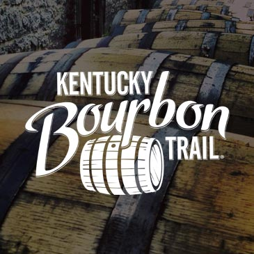
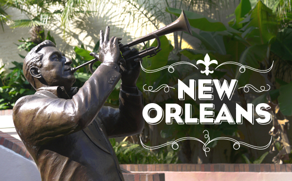
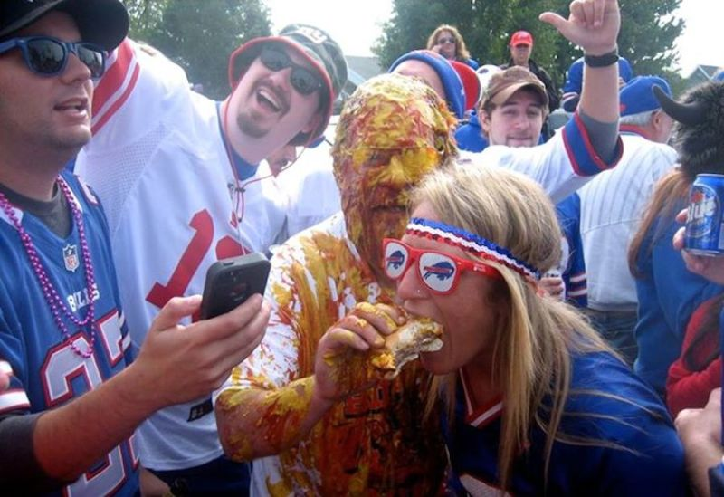

Domestic

The bourbon trail has everything a traveling gent could want. Bourbon, horses, and gambling on horses!

A melting pot of cultures and cuisines by the Bayou, New Orleans is a gem of a city.

An underrated city with a great architectural legacy and the most out of control fans in football!
International